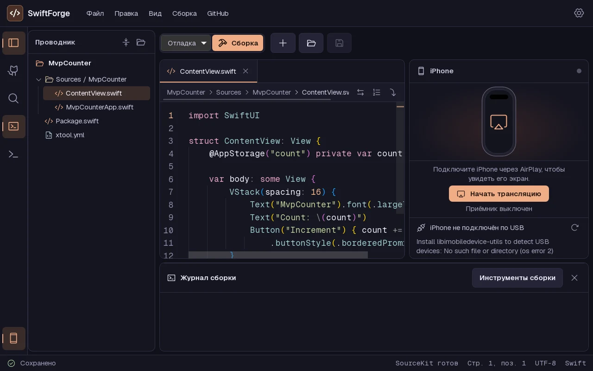

Ubuntu
Пакет .deb для 64-битной Ubuntu. Сборка iOS и AirPlay требуют локальных инструментов.
Скачать .deb ↓Пишите код с подсказками SourceKit, собирайте IPA на Ubuntu и смотрите экран физического iPhone прямо в IDE.
Скачать SwiftForge
Пакет .deb для 64-битной Ubuntu. Сборка iOS и AirPlay требуют локальных инструментов.
Скачать .deb ↓Установщик для Windows x64. Предварительная сборка для проверки редактора и интерфейса.
Скачать .exe ↓Если ссылка недоступна, сборка для этой платформы ещё не опубликована. Все релизы